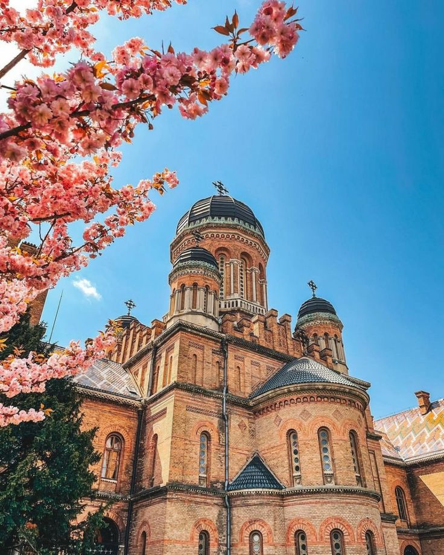
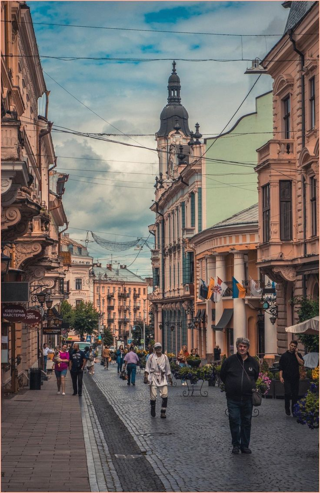
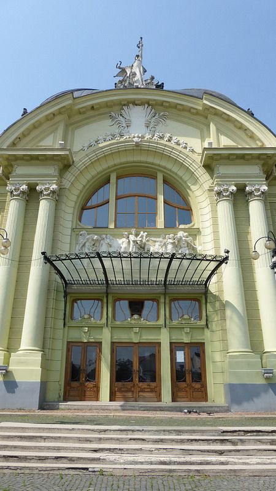

Чернівці
Чернівці — місто, де історія не застигла в камені, а продовжує жити у ритмі сучасності. Вузькі вулички, старовинні фасади та затишні площі створюють атмосферу, що поєднує європейську вишуканість із буковинською гостинністю.

Чернівці — місто, де історія не застигла в камені, а продовжує жити у ритмі сучасності. Вузькі вулички, старовинні фасади та затишні площі створюють атмосферу, що поєднує європейську вишуканість із буковинською гостинністю.
Перші згадки про місто сягають середньовіччя, коли воно було важливим торговельним осередком на шляхах між Сходом і Заходом. Згодом Чернівці увійшли до складу Молдавського князівства, а наприкінці XVIII століття опинилися під владою Австрійської імперії. Саме цей період став часом стрімкого розвитку: місто набуло європейського вигляду, збагатилося величною архітектурою, новими навчальними закладами, театрами та громадськими просторами.
У XIX столітті Чернівці перетворилися на один із найважливіших культурних центрів регіону. Тут мирно співіснували українці, румуни, німці, євреї, поляки та представники багатьох інших народів, створюючи унікальне багатокультурне середовище. Саме ця різноманітність сформувала особливий дух міста, який і сьогодні відчувається в його традиціях, мистецтві та архітектурній спадщині.


Резиденція митрополитів Буковини і Далмації

Вулиця Ольги Кобилянської

Чернівецький драматичний театр
Більше:
Резиденція митрополитів Буковини і Далмації — головна архітектурна перлина Чернівців. Зведена за проєктом Йозефа Главки, вона поєднує елементи різних архітектурних стилів і входить до Списку світової спадщини ЮНЕСКО. Сьогодні в її стінах розташований Чернівецький національний університет.
Вулиця Ольги Кобилянської — найатмосферніше місце Чернівців. Брукована пішохідна вулиця з історичними будівлями, затишними кав'ярнями та архітектурою австрійської доби найкраще передає неповторний характер міста.
Чернівецький музично-драматичний театр є однією з найкрасивіших споруд міста. Побудований на початку XX століття, він і сьогодні залишається важливим культурним центром, вражаючи своєю витонченою архітектурою та елегантністю.